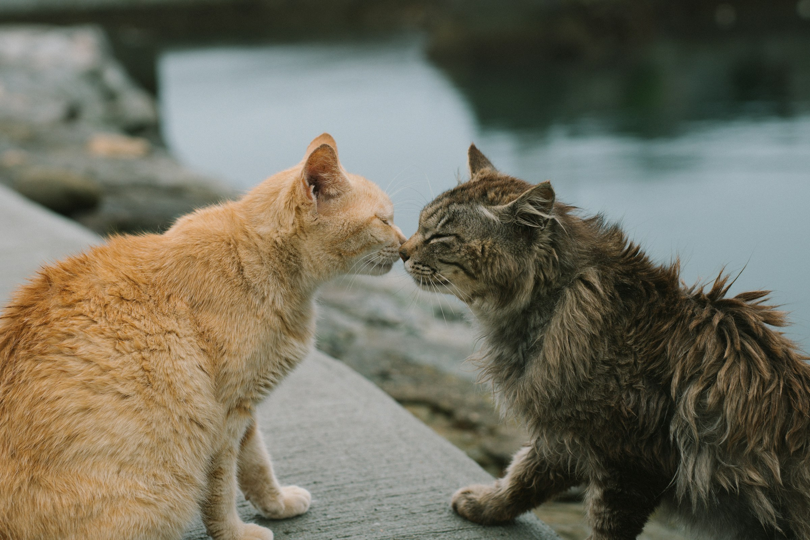

Cats Training
The best way to train your cat is by using what is known as ‘positive reinforcement’. This means rewarding your cat for performing a desired behaviour. You want your cat to be motivated to learn and feel happy and comfortable doing so. The more the cat feels good about doing something we want them to do, the more likely they are to do it.
HOW CAN I MOTIVATE MY CAT?
When it comes to motivation, cats are a little different from dogs. In general, cats are less good at (or less interested in!) reading our body language. They probably don’t have a desire to ‘please’ us in the way that dogs do and are much more interested in food rewards than verbal or physical praise. Some cats may see stroking or being given access to a toy as rewarding, however, usually, the best way to motivate your cat is using food. The tastier your cat finds the food, or treat, the more likely they will be to perform the behaviour.
